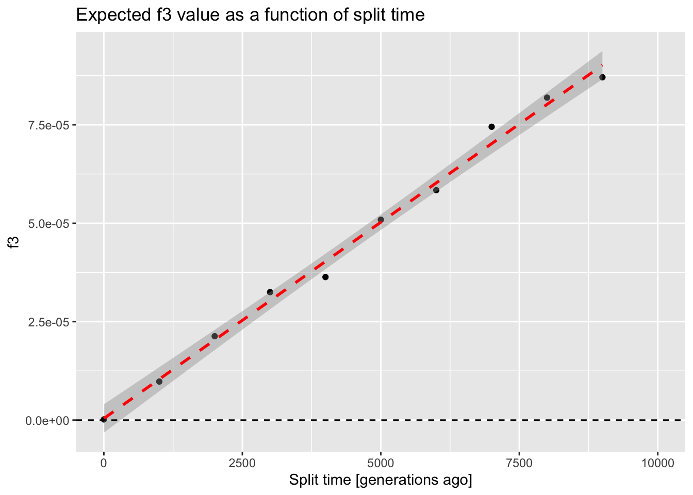
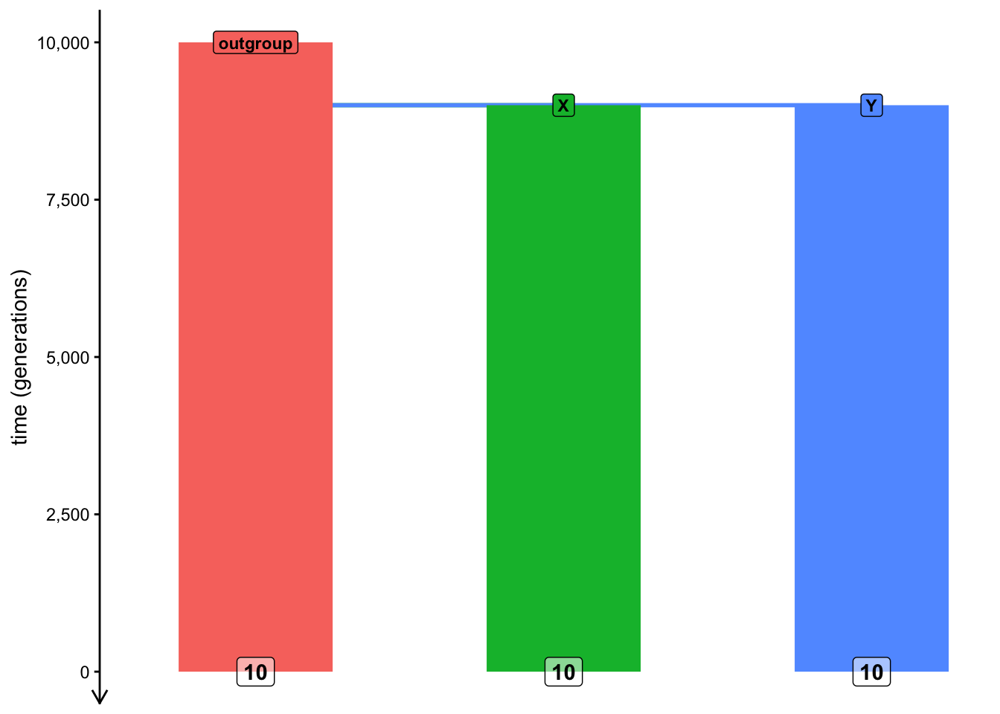
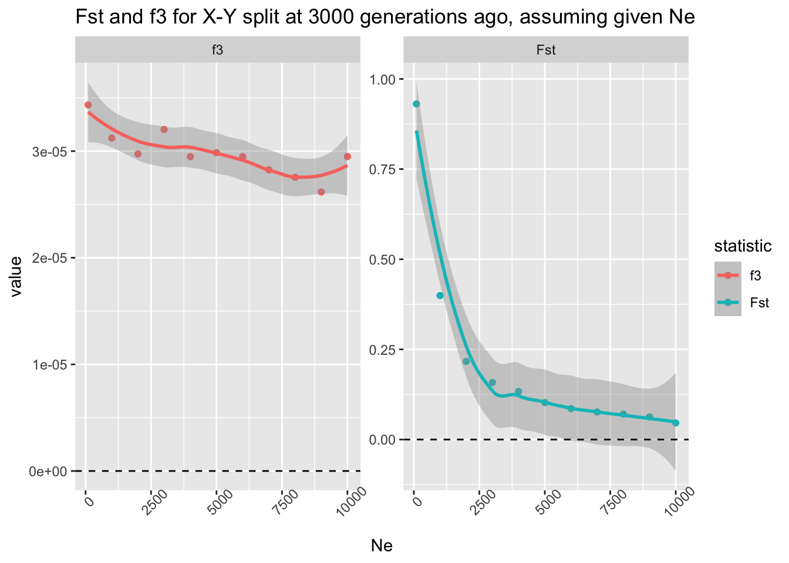
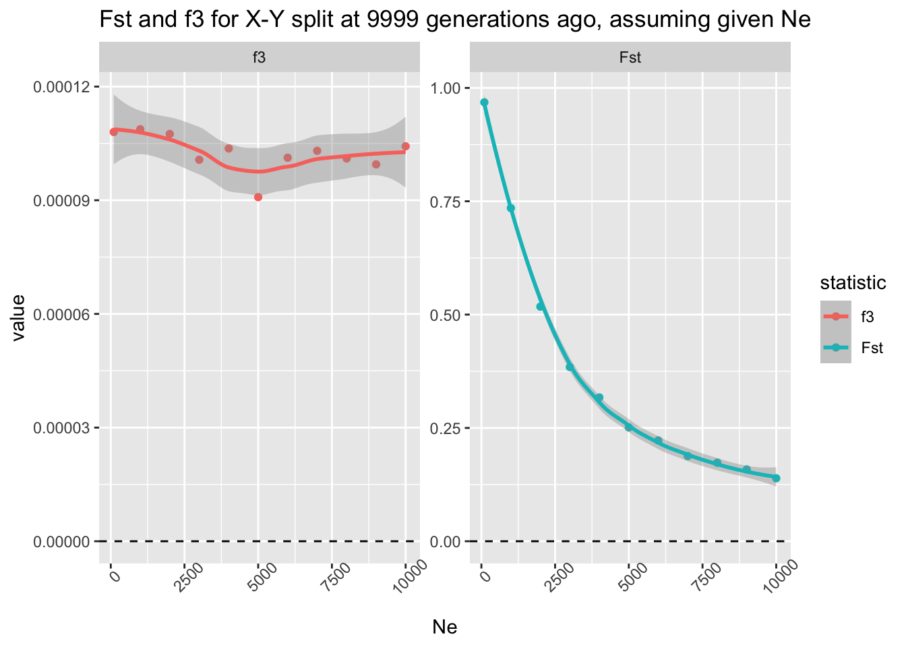
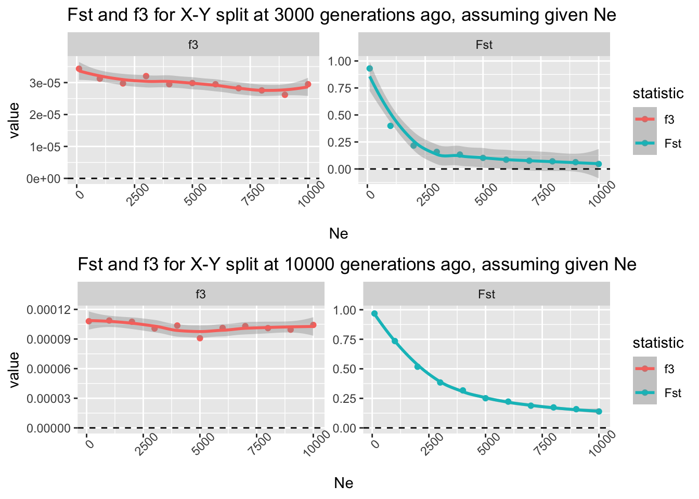
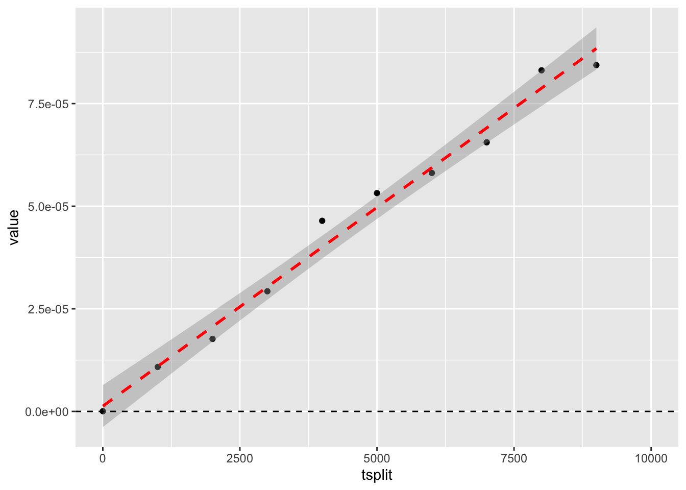
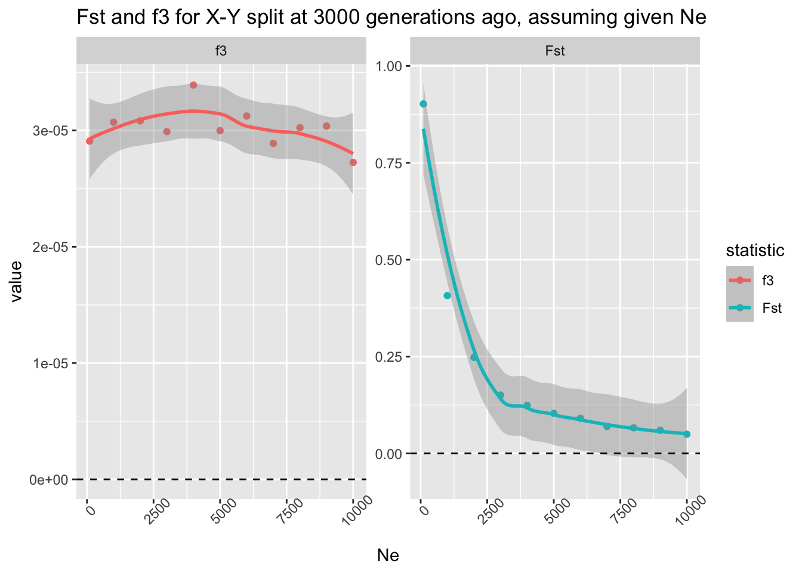
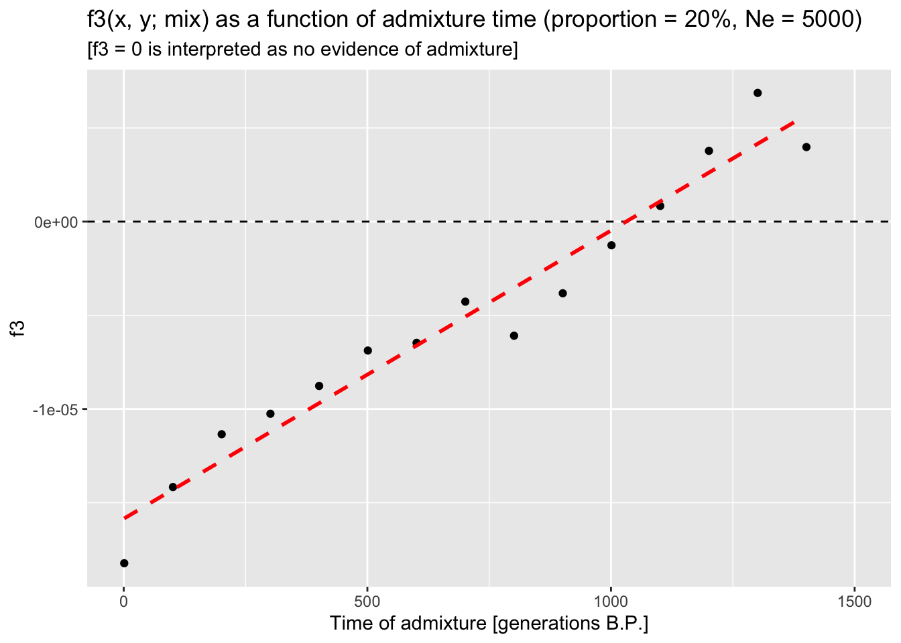
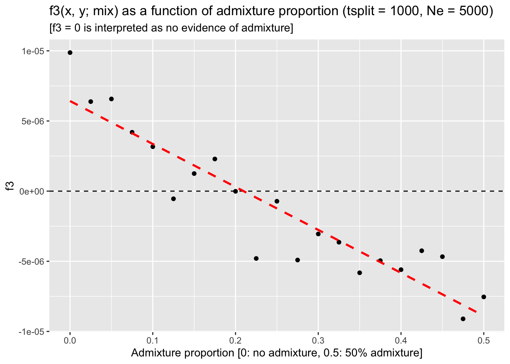
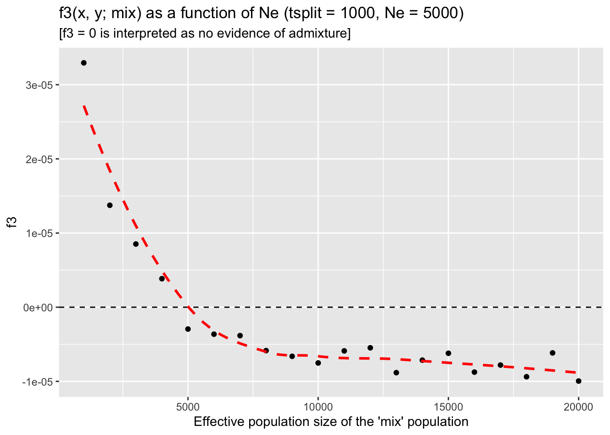

In the previous session, you learned to compute within-group summary statistics by providing slendr functions single vectors of individual names, most easily obtained by the function ts_names() in a very straightforward way.
Whenever we work with “between-group statistics” (i.e., statistics based on comparing genomic variation between different groupings of individuals), we need to be aware of a couple of things with regards to how R handles nested lists of vectors.
Let’s first set up a small model to demonstrate this.
Start by creating a new R script called split_simulation.R and program the following model in it. Simulate a tree sequence object ts (sequence length 10Mb, recombination rate 1e-8, mutation rate 1e-8) from this model, scheduling the recording of ten individuals from each of the three populations at time 0 (i.e., the “present-day”).
TODO: Add a sketch of the model.
Hint: Unlike our previous toy examples, this model features multiple populations, so you will need to program population splits. Remember that you can specify that a population should split from some parent lineage by using the population(..., parent = <parent population>) format.
NoteClick to see the solution
Here’s what’s in my split_simulation.R script:
library(slendr)init_env()outgroup <-population("outgroup", N =1000, time =10000)X <-population("X", N =1000, time =3000, parent = outgroup)Y <-population("Y", N =1000, time =3000, parent = outgroup)model <-compile_model(list(outgroup, X, Y), generation_time =1)schedule <-schedule_recording(model, times =0, list("each", 10))plot_model(model, order =c("outgroup", "X", "Y"), proportions =TRUE, schedule = schedule)
Let’s work on a couple of basic vector- and list-based operations in R, which we will be using all the time (you can refresh your memory on this topic by scrolling through the introductory R bootcamp chapter, particularly sections about subsetting and indexing into vectors and lists.
You’re already familiar with the calling the function ts_names() as ts_names(ts) and know that it produces a plain vector of individual names. Now, add the following line to your script:
samples <-ts_names(ts, split =TRUE)
What is the type of the data stored in the samples variable? What does this information tell us and how is it different from running simply ts_names(ts)?
NoteClick to see the solution
The command ts_names(ts) produces vector of all individuals recorded in the tree sequence, as we can see here:
Now, using operations for manipulation of R lists, how do you access the names of individuals in the population X? Specifically, what’s the difference between calling samples$X, samples[["X"]], and samples["X"]? Try to answer first without running these commands, then run them in the R console to verify your intuition.
NoteClick to see the solution
The first command extracts a “standalone” vector of X individuals from the list:
Remember how in the previous chapter, you needed to specify a subset of individuals in a slightly convoluted way in order to compute a statistic on them, such as:
list(group_name =c("X_1", "X_2", "X_3"))
$group_name
[1] "X_1" "X_2" "X_3"
Doing so for complex computations is very annoying. But also—notice how this chunk produces the same format of data as this:
This is why I implemented the variant ts_names(ts, split = TRUE) in slendr, as a shortcut for not having to deal with named lists of vectors. This makes it possible to use the samples variable to instruct slendr to perform computation very efficiently.
Exercise: “Outgroup” \(f_3\) statistic
The \(f_3\) statistic is a famous population genetic metric formally established by Nick Patterson and David Reich in 2008. In practice, the statistic is used in two formulations: as a measure of shared drift between two populations (the “outgroup” formulation) and as an admixture test (something we’ll look at later).
As the name implies, \(f_3\) statistic involves the specification of samples from three different lineages (usually populations) called A, B, and C, making it a good starting example of how to compute multi-population statistics.
Let’s develop a simulation-based model which will allow us to explore some practically relevant features of this important summary statistic.
Let’s start by doing a couple of modifications to our script split_simulation.R:
Wrap the code in a function called simulate_split() and update it so that this function accepts a single argument tsplit and uses it to specify the point at which point will the “X” and “Y” populations split from the “outgroup” lineage (instead of having a fixed value for the split time as you have now).
Add the computation of the outgroup \(f_3\) statistic, using the function ts_f3(), setting the “X” individuals as the B = argument, “Y” individuals as the C = argument, and the A = argument to the “outgroup” individuals (remember to use the samples variable produced by ts_names() to do this).
The function should return a data frame produced by the ts_f3() function, with a new column named tsplit containing the value of this function argument.
Note: The \(f_3\) statistic is traditionally expressed as \(f_3(A, B; C)\), where C represents the outgroup. Unfortunately, in tskit the outgroup is named A, with B and C being the pair of samples from which we trace the length of branches towards the outgroup, so the statistic is interpreted as \(f_3(B, C;
A).\)
NoteClick to see the solution
Here’s the content of the script split_simulation.R:
library(slendr)init_env()simulate_split <-function(tsplit) { outgroup <-population("outgroup", N =1000, time =10000) X <-population("X", N =1000, time = tsplit, parent = outgroup) Y <-population("Y", N =1000, time = tsplit, parent = outgroup) model <-compile_model(list(outgroup, X, Y), generation_time =1) schedule <-schedule_recording(model, times =0, list("each", 10)) ts <-msprime(model, sequence_length =10e6, recombination_rate =1e-8, schedule = schedule) %>%ts_mutate(mutation_rate =1e-8) samples <-ts_names(ts, split =TRUE) df <-ts_f3(ts, A = samples["outgroup"], B = samples["X"], C = samples["Y"]) df$tsplit <- tsplitreturn(df)}
Test your function simulate_split() by calling it on a few split times in the R console. When you’re confident you programmed the function correctly, use map_dfr() from the purrr package to run simulations of split times between 1 and 10000 generations in steps of every 1000 generations (see ?seq for a reminder on how to do this). Visualize the statistical expectation of the \(f_3\) statistic in a scatterplot as a function of the split time. Add all this analysis code in your script split_simulation.R after your function definition, so that you have it properly recorded as a reproducible pipeline.
NoteClick to see the solution
Let’s test the function first:
simulate_split(tsplit =1000)
# A tibble: 1 × 6
A B C statistic f3 tsplit
<chr> <chr> <chr> <chr> <dbl> <dbl>
1 outgroup X Y f3(outgroup;X,Y) 0.00000901 1000
simulate_split(tsplit =2000)
# A tibble: 1 × 6
A B C statistic f3 tsplit
<chr> <chr> <chr> <chr> <dbl> <dbl>
1 outgroup X Y f3(outgroup;X,Y) 0.0000219 2000
simulate_split(tsplit =5000)
# A tibble: 1 × 6
A B C statistic f3 tsplit
<chr> <chr> <chr> <chr> <dbl> <dbl>
1 outgroup X Y f3(outgroup;X,Y) 0.0000527 5000
Now we can run it on a grid of parameter values:
library(purrr)f3_outgroup <-map_dfr(seq(1, 10000, by =1000), simulate_split)
We can verify that we did, indeed, get a tidy table of the expected \(f_3\) values for a range of possible split times by typing the result into the R console:
f3_outgroup
# A tibble: 10 × 6
A B C statistic f3 tsplit
<chr> <chr> <chr> <chr> <dbl> <dbl>
1 outgroup X Y f3(outgroup;X,Y) 0.000000165 1
2 outgroup X Y f3(outgroup;X,Y) 0.00000978 1001
3 outgroup X Y f3(outgroup;X,Y) 0.0000213 2001
4 outgroup X Y f3(outgroup;X,Y) 0.0000325 3001
5 outgroup X Y f3(outgroup;X,Y) 0.0000363 4001
6 outgroup X Y f3(outgroup;X,Y) 0.0000509 5001
7 outgroup X Y f3(outgroup;X,Y) 0.0000584 6001
8 outgroup X Y f3(outgroup;X,Y) 0.0000745 7001
9 outgroup X Y f3(outgroup;X,Y) 0.0000819 8001
10 outgroup X Y f3(outgroup;X,Y) 0.0000871 9001
And we can finally visualize our results:
library(ggplot2)ggplot(f3_outgroup, aes(tsplit, f3)) +geom_point() +geom_smooth(method ="lm", color ="red", linetype ="dashed") +geom_hline(yintercept =0, linetype ="dashed") +coord_cartesian(xlim =c(0, 10000)) +ggtitle("Expected f3 value as a function of split time") +xlab("Split time [generations ago]")
`geom_smooth()` using formula = 'y ~ x'

We can see that, as expected, the \(f_3\) statistic gives a nearly zero for the simulation of an extremely recent split of X and Y populations from the outgroup lineage—this is consistent with \(f_3\) measuring the length of the shared branch of X and Y towards the outgroup sample which, in this case, is almost nonexistent, only 1 generation long. To demonstrate by visualizing such a model (which, necessarily, looks a bit silly):

On the other hand, the older the split time from the outgroup, the longer the shared branch is. Again, to demonstrate the “shared branch length” graphically on a model with the split time of 9001 generations ago:
With this initial setup out of the way, let’s delve into using our small simulation pipeline to answer a couple of practically relevant questions.
Exercise: Statistical power of \(F_{ST}\) vs outgroup \(f_3\)
Another statistic which is very frequently used as a measure of population differentiation is \(F_{ST}\). Let’s say we want to understand, which of the two (\(f_3\) or \(F_{ST}\)) is more robust to \(N_e\) differences between the two populations under study. Recall that \(N_e\) determines the amount of genetic drift (and, therefore, the rate of the loss) of genomic variation in a population. In other words, if you were interested in measuring how far in the past the populations began differentiating, would both of them give you a reliable answer, regardless of the \(N_e\) of those populations?
Both \(F_{ST}\) and \(f_3\) are routinely used as measures of population differentiation—can we use them equivalently? Does one have potentially more statistical power than the other? They are sometimes used quite interchangeably in practical research—could it sometimes be a problem?
We want to evaluate the impact of \(N_e\), so let’s modify our function simulate_split() a little bit first:
Right now the function accepts a single argument tsplit. Add a second argument to this function called Ne, then modify the two lines of code indicating splits of “X” and “Y” populations from the “outgroup” and change the fixed values of 1000 to use the new flexible parameters Ne.
Modify the function so that it returns in the resulting data frame not only the \(f_3\) value (computed by ts_f3()) but also the \(F_{ST}\) value (computed by ts_fst()). Look up the help for ?ts_fst to see how to use it (it’s very similar to using the ts_f3() function).
The data frame returned by the function should now include not only the tsplit column (containing the value of the tsplit argument) as well as the column Ne (containing the value of the Ne argument).
NoteClick to see the solution
Here’s how the modified function looks like:
simulate_split <-function(tsplit, Ne) { outgroup <-population("outgroup", N =1000, time =10000) X <-population("X", N = Ne, time = tsplit, parent = outgroup) Y <-population("Y", N = Ne, time = tsplit, parent = outgroup) model <-compile_model(list(outgroup, X, Y), generation_time =1) schedule <-schedule_recording(model, times =0, list("each", 25)) ts <-msprime(model, sequence_length =10e6, recombination_rate =1e-8, schedule = schedule) %>%ts_mutate(mutation_rate =1e-8) samples <-ts_names(ts, split =TRUE) value_fst <-ts_fst(ts, sample_sets = samples[c("X", "Y")])$Fst value_f3 <-ts_f3(ts, A = samples["outgroup"], B = samples["X"], C = samples["Y"])$f3 df <-data.frame(statistic =c("Fst", "f3"), value =c(value_fst, value_f3)) df$tsplit <- tsplit df$Ne <- Nereturn(df)}
And here’s how we can check that it works:
simulate_split(tsplit =3000, Ne =100)
statistic value tsplit Ne
1 Fst 9.400884e-01 3000 100
2 f3 2.613004e-05 3000 100
simulate_split(tsplit =3000, Ne =1000)
statistic value tsplit Ne
1 Fst 4.320197e-01 3000 1000
2 f3 3.328921e-05 3000 1000
simulate_split(tsplit =3000, Ne =5000)
statistic value tsplit Ne
1 Fst 9.732853e-02 3000 5000
2 f3 2.723118e-05 3000 5000
Now that you have your updated function, use it to run a new batch of parameter grid simulations using the looping function map_dfr(), this time fixing tsplit = 3000 and simulating the model for the values of the \(N_e\) parameter indicated below using the following code:
# define values of the Ne parameter gridNe_grid <-c(100, seq(from =1000, to =10000, by =1000))# note that although our new function requires two arguments (Ne and tsplit),# we can loop over one parameter (Ne), while fixing the other (tsplit)df_tsplit3k <-map_dfr(Ne_grid, simulate_split, tsplit =3000)
**When you’re done, visualize the expected values of f3 and Fst summary statistics as functions of \(N_e\) (and, therefore, as a function of the amount of genetic drift).*
NoteClick to see the solution
ggplot(df_tsplit3k, aes(Ne, value, color = statistic)) +geom_point() +geom_smooth() +facet_wrap(~ statistic, scales ="free_y") +theme(axis.text.x =element_text(angle =45)) +geom_hline(yintercept =0, linetype ="dashed") +ggtitle("Fst and f3 for X-Y split at 3000 generations ago, assuming given Ne")
`geom_smooth()` using method = 'loess' and formula = 'y ~ x'

Conclusion: the \(f_3\) statistic really is an unbiased estimator of population divergence with respect to \(N_e\) of the two lineages. On the other hand, \(F_{ST}\) is not a great metric of shared branch length, even though it’s sometimes colloquially used in this phylogenetic sense. However, this is not surprising, because \(F_{ST}\) measures population differentiation! If the \(N_e\) is huge, both “X” and “Y” lineages can retain most of the genomic variation which arose in their ancestor (unless they diverged a very long time ago). On the other hand, \(f_3\) truly measures the shared branch length which is, by definition, indicative of the population divergence.
Now, add a second batch of the same grid simulations, but this time fixing tsplit to 9999 generations ago. What changes when you visualize your results, with regards to the patterns shown by \(f_3\) and \(F_{ST}\)?
NoteClick to see the solution
We only need to rerun the simulation loop and visualise the results:
**When you’re done, visualize the expected values of f3 and Fst summary statistics as functions of \(N_e\) (and, therefore, as a function of the amount of genetic drift).*
ggplot(df_tsplit10k, aes(Ne, value, color = statistic)) +geom_point() +geom_smooth() +facet_wrap(~ statistic, scales ="free_y") +theme(axis.text.x =element_text(angle =45)) +geom_hline(yintercept =0, linetype ="dashed") +ggtitle("Fst and f3 for X-Y split at 9999 generations ago, assuming given Ne")
`geom_smooth()` using method = 'loess' and formula = 'y ~ x'

When we compare both results side-by-side, we see the difference right away. The split time at 3000 generations ago meant that, when the populations have large \(N_e\), they retain lots of shared genetic variation, leading to a very low \(F_{ST}\) which indicates they are not differentiated (upper row). However, the older the split time between the two populations, the more genetic drift causes both “X” and “Y” to become differentiated which is manifested by a higher \(F_{ST}\) value even for very high \(N_e\):
cowplot::plot_grid(ggplot(df_tsplit3k, aes(Ne, value, color = statistic)) +geom_point() +geom_smooth() +facet_wrap(~ statistic, scales ="free_y") +theme(axis.text.x =element_text(angle =45)) +geom_hline(yintercept =0, linetype ="dashed") +ggtitle("Fst and f3 for X-Y split at 3000 generations ago, assuming given Ne"),ggplot(df_tsplit10k, aes(Ne, value, color = statistic)) +geom_point() +geom_smooth() +facet_wrap(~ statistic, scales ="free_y") +theme(axis.text.x =element_text(angle =45)) +geom_hline(yintercept =0, linetype ="dashed") +ggtitle("Fst and f3 for X-Y split at 10000 generations ago, assuming given Ne"),nrow =2)
`geom_smooth()` using method = 'loess' and formula = 'y ~ x'
`geom_smooth()` using method = 'loess' and formula = 'y ~ x'

Crucially, however, note that \(f_3\) is completely robust to the amount of genetic drift (i.e., the \(N_e\) of the populations in question)—it always measures the correct branch length, regardless of the \(N_e\) in the assumed model.
Catch up
Here is a complete solution to the exercises so far, represented by a single tidy reproducible R script split_simulation.R.
NoteClick to see the entire script
library(slendr)init_env()library(dplyr)
Attaching package: 'dplyr'
The following objects are masked from 'package:stats':
filter, lag
The following objects are masked from 'package:base':
intersect, setdiff, setequal, union
library(ggplot2)library(purrr)# this is the second version of the function simulate_split() which accepts# both tsplit and Ne as function argumentssimulate_split <-function(tsplit, Ne) {# set up the three-population demographic model outgroup <-population("outgroup", N =1000, time =10000) X <-population("X", N = Ne, time = tsplit, parent = outgroup) Y <-population("Y", N = Ne, time = tsplit, parent = outgroup) model <-compile_model(list(outgroup, X, Y), generation_time =1)# simulate a tree sequence which will record a defined set of 25 individuals# from each population at the end of the simulation (i.e., "present-day") schedule <-schedule_recording(model, times =0, list("each", 25)) ts <-msprime(model, sequence_length =10e6, recombination_rate =1e-8, schedule = schedule) %>%ts_mutate(mutation_rate =1e-8)# extract the list of names of individuals in each population for convenience samples <-ts_names(ts, split =TRUE)# compute both summary statistics and extract their values as single numbers value_fst <-ts_fst(ts, sample_sets = samples[c("X", "Y")])$Fst value_f3 <-ts_f3(ts, A = samples["outgroup"], B = samples["X"], C = samples["Y"])$f3# construct a data frame with all the necessary information df <-data.frame(statistic =c("Fst", "f3"), value =c(value_fst, value_f3)) df$tsplit <- tsplit df$Ne <- Nereturn(df)}# this is the original exploration of f3 as a function of split time, slightly# tweaked to use the version of simulate_split() parametrizable by both# tsplit and Ne (recall that the first version used only the tsplit argument)f3_outgroup <-map_dfr(seq(1, 10000, by =1000), simulate_split, Ne =1000)# and visualization of the resultsf3_outgroup %>%filter(statistic =="f3", Ne ==1000) %>%ggplot(aes(tsplit, value)) +geom_point() +geom_smooth(method ="lm", color ="red", linetype ="dashed") +geom_hline(yintercept =0, linetype ="dashed") +coord_cartesian(xlim =c(0, 10000))
`geom_smooth()` using formula = 'y ~ x'

# this is the comparison of the statistical power of Fst and f3 statistics with# respect to the amount of genetic drift in both lineagesNe_grid <-c(100, seq(from =1000, to =10000, by =1000))f3_vs_fst <-map_dfr(Ne_grid, simulate_split, tsplit =3000)# and visualization of the f3-vs-Fst comparisonggplot(f3_vs_fst, aes(Ne, value, color = statistic)) +geom_point() +geom_smooth() +facet_wrap(~ statistic, scales ="free_y") +theme(axis.text.x =element_text(angle =45)) +geom_hline(yintercept =0, linetype ="dashed") +ggtitle("Fst and f3 for X-Y split at 3000 generations ago, assuming given Ne")
`geom_smooth()` using method = 'loess' and formula = 'y ~ x'

Exercise: “Admixture” \(f_3\)
Now let’s explore the application of the \(f_3\) statistic in its other common use, which is an admixture test. Our primary interest in this exercise will be to investigate the limits of \(f_3\) to detect evidence of admixture—in particular, if we see a “non-significant” \(f_3\) statistic (“admixture \(f_3\)” is considered statistically not significant when it has a positive value), which factors could make this test being a false negative?
To do this, we will need to expand our baseline population model a little bit.
Create a new script, this time calling it admixture_simulation.R. Paste the following skeleton of a model into this script, read it and try to decipher what kind of model does it program (it’s obvious from the text above, but still, do this as a code-reading practice). In particular, pay attention to how the admixture is programmed. Run the code and take a look at the plot visualization produced.
library(slendr)init_env()library(dplyr) # manipulating tabular datalibrary(ggplot2) # data visualizationlibrary(purrr) # convenient looping functions# model parameter (currently fixed to these values)tmix <-2000# admixture timeprop <-0.1# admixture proportionNe <-5000# Ne of the admixed populationoutgroup <-population("outgroup", N =5000, time =10000)x <-population("x", N =5000, time =5000, parent = outgroup)y <-population("y", N =5000, time =5000, parent = outgroup)# this is how we program "mix" as a merge of "x" and "y" populationsmix <-population("mix", N = Ne, time = tmix +1, parent = x)gf <-gene_flow(from = y, to = mix, start = tmix, end = tmix -1, proportion = prop)model <-compile_model(list(outgroup, x, y, mix), gene_flow = gf, generation_time =1)plot_model(model, order =c("outgroup", "x", "mix", "y"), proportions =TRUE)
NoteClick to see the solution
In our model, the x and y populations merge at a time tmix to form a population mix. Note that due to the way in which slendr currently implements population merges, we first need to program the split of the population “mix” from a parent “x” at time tmix - 1, followed at time tmix (i.e., immediately in the following generation) by admixture from “y” at some defined proportion proportion (a value between 0 and 1). To approximate the idea of a population merge as closely as possible within the constraints of the slendr interface, we program this admixture event so that it ends after a single generation (i.e., it should end at time tmix + 1).
plot_model(model, order =c("outgroup", "x", "mix", "y"), proportions =TRUE)

This is a bit of an annoying peculiarity of slendr that I never got to make easier, sorry about that! Maybe one day.
Now, we want to establish the limits of statistical power of \(f_3\) to detect signs of admixture across all sorts of parameters, given our general model of interest.
You know what’s coming!
Transform the admixture_simulation.R script (which has currently fixed values of parameters) into a generalized function model by wrapping it in a function called simulate_admixture(). Your function should accept three arguments this time:
tmix specifying the time of admixture,
prop specifying the admixture proportion,
Ne specifying the N size of the population “mix”.
In your function, program the recording of 20 individuals from populations “x”, “y”, and “mix” at time 0 (i.e., at the end of the simulation), and program it to simulate a 10 Mb of tree sequence with recombination rate 1e-8 and mutation rate 1e-8. Finally, compute the “admixture \(f_3\) statistic in the appropriate A, B, C configuration, adding the arguments tmix, prop, and Ne to the data frame produced by the ts_f3() function.
Your function will return this data frame as its output. Again, test it on a couple of parameter combinations, to make sure it produces results in the desirable format described above.
NoteClick to see the solution
Here’s our expanded function:
simulate_admixture <-function(tmix, prop, Ne) { outgroup <-population("outgroup", N =5000, time =10000) x <-population("x", N =5000, time =5000, parent = outgroup) y <-population("y", N =5000, time =5000, parent = outgroup) mix <-population("mix", N = Ne, time = tmix +1, parent = x) gf <-gene_flow(from = y, to = mix, start = tmix, end = tmix -1, proportion = prop) model <-compile_model(list(outgroup, x, y, mix), gene_flow = gf, generation_time =1) schedule <-schedule_recording(model, times =0, list(x, 20), list(y, 20), list(mix, 20)) ts <-msprime(model, sequence_length =25e6, recombination_rate =1e-8, schedule = schedule) %>%ts_mutate(mutation_rate =1e-8) samples <-ts_names(ts, split =TRUE)ts_f3(ts, A = samples["mix"], B = samples["x"], C = samples["y"]) %>%mutate(tmix = tmix, prop = prop, Ne = Ne)}
Let’s test it on couple of parameter combinations:
simulate_admixture(tmix =2000, prop =0.2, Ne =10000)
# A tibble: 1 × 8
A B C statistic f3 tmix prop Ne
<chr> <chr> <chr> <chr> <dbl> <dbl> <dbl> <dbl>
1 mix x y f3(mix;x,y) 0.00000336 2000 0.2 10000
simulate_admixture(tmix =1000, prop =0.1, Ne =10000)
# A tibble: 1 × 8
A B C statistic f3 tmix prop Ne
<chr> <chr> <chr> <chr> <dbl> <dbl> <dbl> <dbl>
1 mix x y f3(mix;x,y) -0.000000522 1000 0.1 10000
simulate_admixture(tmix =1, prop =0, Ne =3000)
# A tibble: 1 × 8
A B C statistic f3 tmix prop Ne
<chr> <chr> <chr> <chr> <dbl> <dbl> <dbl> <dbl>
1 mix x y f3(mix;x,y) -0.00000104 1 0 3000
Having tested the function on a couple of individual simulations, run it along the range of potential tsplit values like this (add this code to your script), while fixing the admixture proportion to 20% and \(N_e\) to 5000:
tsplit_grid <-seq(1, 1500, by =100)f3_tsplit <-map_dfr(tsplit_grid, simulate_admixture, prop =0.2, Ne =5000)
Do you see any interesting pattern of behavior of the admixture \(f_3\) test? Can we rely on it to detect admixture (by showing a negative value) in all scenarios, or does it lose detection power in some circumstances (by showing a value above zero)?
NoteClick to see the solution
Let’s run a new grid simulation of our admixture \(f_3\) model:
tsplit_grid <-seq(1, 1500, by =100)f3_tsplit <-map_dfr(tsplit_grid, simulate_admixture, prop =0.2, Ne =5000)f3_tsplit
# A tibble: 15 × 8
A B C statistic f3 tmix prop Ne
<chr> <chr> <chr> <chr> <dbl> <dbl> <dbl> <dbl>
1 mix x y f3(mix;x,y) -0.0000179 1 0.2 5000
2 mix x y f3(mix;x,y) -0.00000973 101 0.2 5000
3 mix x y f3(mix;x,y) -0.0000110 201 0.2 5000
4 mix x y f3(mix;x,y) -0.0000100 301 0.2 5000
5 mix x y f3(mix;x,y) -0.00000971 401 0.2 5000
6 mix x y f3(mix;x,y) -0.00000953 501 0.2 5000
7 mix x y f3(mix;x,y) -0.00000528 601 0.2 5000
8 mix x y f3(mix;x,y) -0.00000598 701 0.2 5000
9 mix x y f3(mix;x,y) -0.00000131 801 0.2 5000
10 mix x y f3(mix;x,y) -0.000000802 901 0.2 5000
11 mix x y f3(mix;x,y) -0.00000240 1001 0.2 5000
12 mix x y f3(mix;x,y) 0.00000237 1101 0.2 5000
13 mix x y f3(mix;x,y) 0.00000295 1201 0.2 5000
14 mix x y f3(mix;x,y) 0.000000887 1301 0.2 5000
15 mix x y f3(mix;x,y) 0.00000128 1401 0.2 5000
And we visualize the results (\(f_3\) as a function of tsplit):
ggplot(f3_tsplit, aes(tmix, f3)) +geom_point() +geom_hline(yintercept =0, linetype ="dashed") +geom_smooth(method ="lm", se =FALSE, color ="red", linetype ="dashed") +coord_cartesian(xlim =c(0, 1500)) +labs(title ="f3(x, y; mix) as a function of admixture time (proportion = 20%, Ne = 5000)",subtitle ="[f3 = 0 is interpreted as no evidence of admixture]",x ="Time of admixture [generations B.P.]")
`geom_smooth()` using formula = 'y ~ x'
From the trend presented by the trajectory of expected \(f_3\) values as a function of the admixture time, we can see that the statistic appears to loose power to detect admixture around 1000 generations “before present” (BP)—recall, that \(f_3\) admixture test is significant when it produces a negative value.
From the trend presented by the trajectory of expected \(f_3\) values as a function of the admixture time, we can see that the statistic appears to loose power to detect admixture around 1000 generations “before present” (BP) because that’s when it starts producing a positive (i.e., non-significant) value.
Why is that? Under which conditions would the \(f_3\) statistic gain more power? Conversely, which factor could make a true scenario of admixture lead to a non-significant \(f_3\) value?
To answer these questions, fix the tadmix parameter to 1000 generations ago (i.e., the point at which \(f_3\) loses power to detect admixture) and Ne at 5000, and then run simulations across a range of admixture proportions prop between 0% and 50% gene flow. Does \(f_3\) pick up the admixture signal for any of these admixture proportions? What does it mean for the ability of \(f_3\) to detect gene flow in our models in general?
NoteClick to see the solution
Run the simulation for admixture proportions ranging between 0% and 50%, fixing the admixture time to the value of 1000 generations ago (i.e., a time point at which the \(f_3\) statistic stops giving us a negative value, i.e. it becomes statistically non-significant):
f3_prop <-map_dfr(seq(0, 0.5, by =0.025), simulate_admixture, tmix =1000, Ne =5000)
When we visualize the results, we can see that — perhaps not unexpectedly — this loss of statistical power can be counterbalanced by increasing the admixture proportion:
ggplot(f3_prop, aes(prop, f3)) +geom_point() +geom_hline(yintercept =0, linetype ="dashed") +geom_smooth(method ="lm", se =FALSE, color ="red", linetype ="dashed") +coord_cartesian(xlim =c(0, 0.5)) +labs(title ="f3(x, y; mix) as a function of admixture proportion (tsplit = 1000, Ne = 5000)",subtitle ="[f3 = 0 is interpreted as no evidence of admixture]",x ="Admixture proportion [0: no admixture, 0.5: 50% admixture]")
`geom_smooth()` using formula = 'y ~ x'

Similarly to how you investigated the detection power of \(f_3\) as a function of admixture proportion for a given value of tmix = 1000 in the previous exercise, repeat this analysis, but now loop over a range of Ne values of the mixing population, leaving the prop parameter fixed at prop = 0.2. What do you conclude based on this analysis? Does Ne have an impact on the \(f_3\) admixture detection? If it does, why?
As you’re interpreting your results, look at the related discussion surrounding equation 22 in this paper, and compare your figure to Figure 5B of the same paper!
ggplot(f3_Ne, aes(Ne, f3)) +geom_point() +geom_hline(yintercept =0, linetype ="dashed") +coord_cartesian(xlim =c(1000, 20000)) +geom_smooth(se =FALSE, color ="red", linetype ="dashed") +labs(title ="f3(x, y; mix) as a function of Ne (tsplit = 1000, Ne = 5000)",subtitle ="[f3 = 0 is interpreted as no evidence of admixture]",x ="Effective population size of the 'mix' population")
`geom_smooth()` using method = 'loess' and formula = 'y ~ x'

In conclusion, we can confirm that the amount of drift (represented by the Ne parameter) really is what determines whether or not can \(f_3\) detect admixture for a given model (represented by a fixed tmix time and prop admixture proportion). In fact, once we reach a certain size of the admixed population, the \(f_3\) value reaches a stable level below zero.